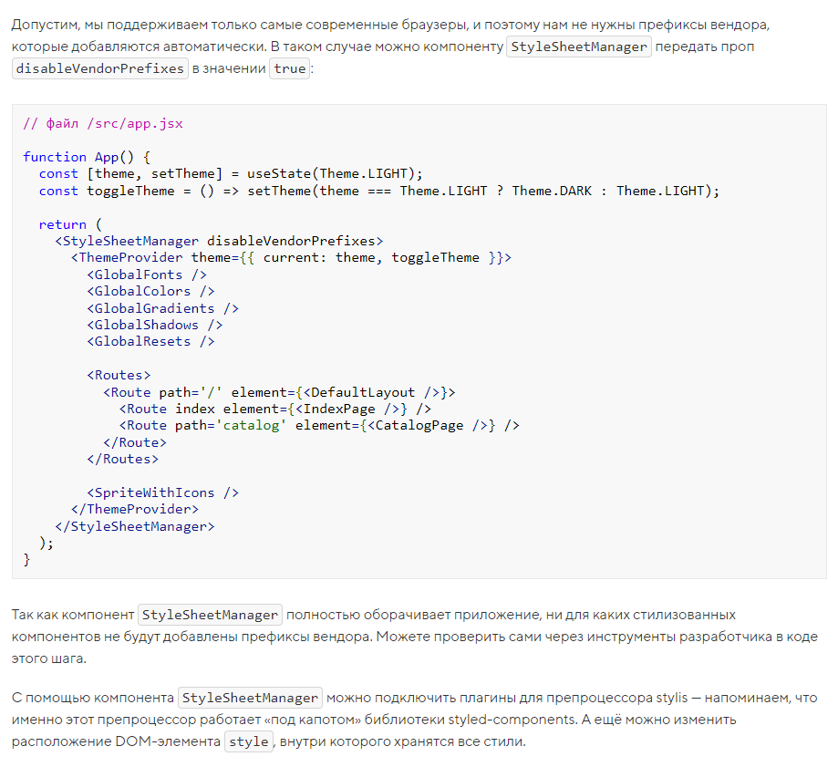

В библиотеке styled-components есть вспомогательный компонент StyleSheetManager С его помощью можно для всего приложения (или только для части — зависит от того, где используется этот компонент) дополнительно настроить, как библиотека обрабатывает описанные стили.
